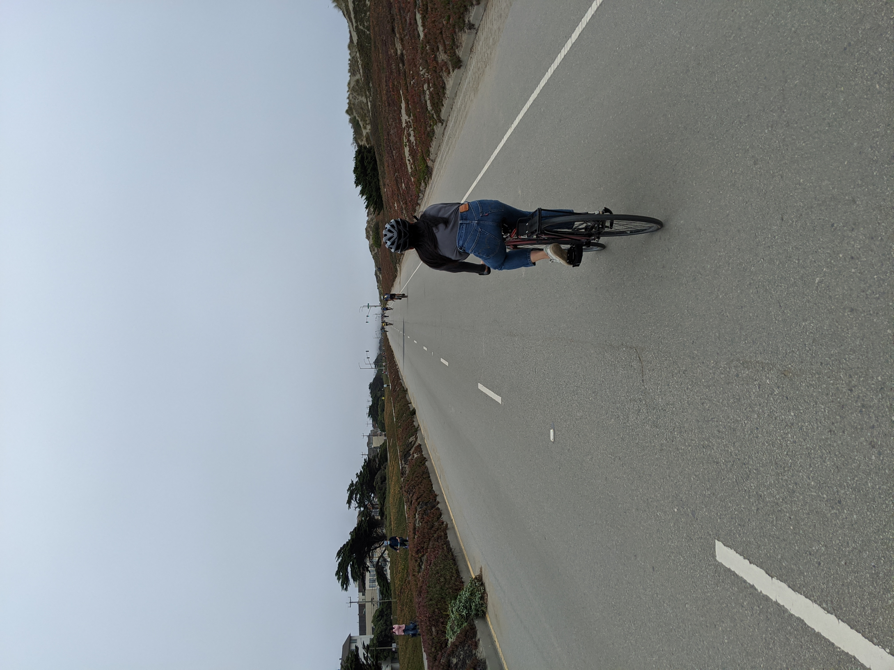
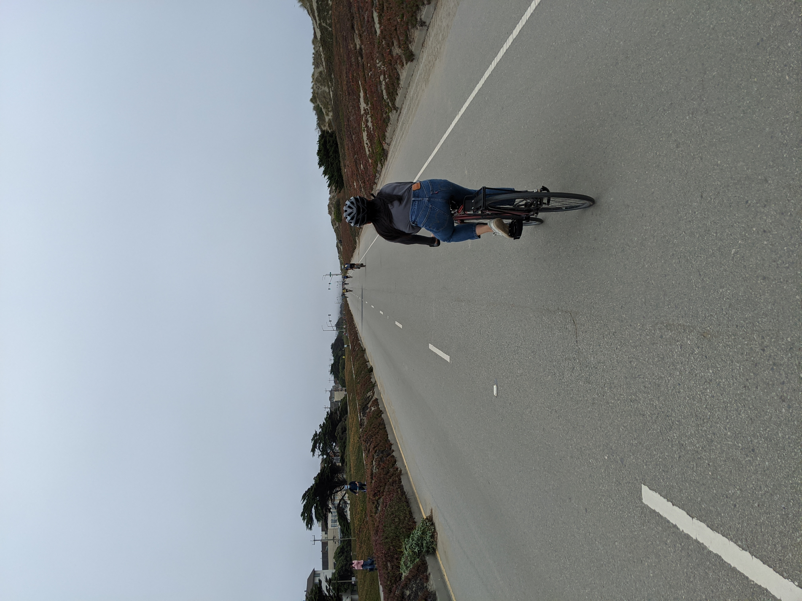

cycling
I didn't learn how to ride a bike until I was sixteen. Thankfully, I've come a long way since.
I started out biking around with a cheap used mountain bike I got from craigslist in college. At the time, it was mostly a way of getting around and widening the radius of places I could get to without a car.
Then in 2020 while living in San Francisco, I "got access to" (aka stole from my boyfriend) a nice shiny red single speed bike. SF is not the most bike friendly city (particularly for single speed riders) with all the hills and the crazy drivers. That being said, I can't imagine living in SF without my bike anymore.
Cycling has really become an amazing way for me to feel more connected with my community. I've used it as a means of exploring different neighborhoods on weekends and mornings before work, and have found pockets of the city I never would've discovered otherwise. All this without having to worry about the pollution / environmental impact, AND while squeezing in a bit of exercise at the same time!
If you want to follow more of my cycling adventures (most of which is just me exploring random parts of the city), check out my strava!
I started out biking around with a cheap used mountain bike I got from craigslist in college. At the time, it was mostly a way of getting around and widening the radius of places I could get to without a car.
Then in 2020 while living in San Francisco, I "got access to" (aka stole from my boyfriend) a nice shiny red single speed bike. SF is not the most bike friendly city (particularly for single speed riders) with all the hills and the crazy drivers. That being said, I can't imagine living in SF without my bike anymore.
Cycling has really become an amazing way for me to feel more connected with my community. I've used it as a means of exploring different neighborhoods on weekends and mornings before work, and have found pockets of the city I never would've discovered otherwise. All this without having to worry about the pollution / environmental impact, AND while squeezing in a bit of exercise at the same time!
If you want to follow more of my cycling adventures (most of which is just me exploring random parts of the city), check out my strava!
 
